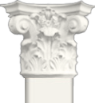

Расположена в исторической части города, рядом с кремлем. С этим местом связано имя Ивана Ивановича Лажечникова – писателя, получившего широкую известность как автора русского исторического романа. Усадьба принадлежала его отцу и деду; здесь он провел свои детские и юношеские годы, о которых позже вспоминал в автобиографических произведениях. В главном доме усадьбы – памятнике архитектуры XVIII-XIX вв. – открыта экспозиция «Коломна минувших столетий».